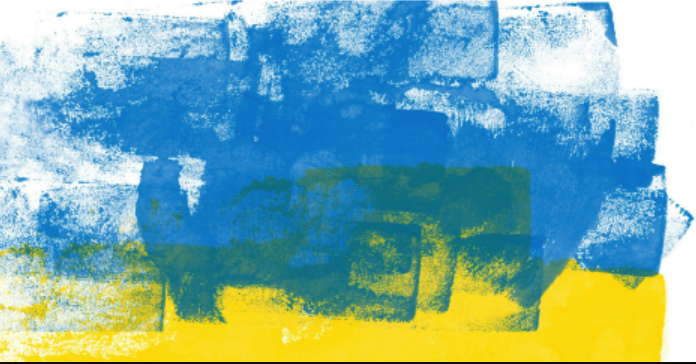

Welcome to BorschToGo
We are a UK-based community interest company dedicated to post-conflict reconstruction in Ukraine and worldwide. We deliver our mission by harnessing Ukrainian food for global good. Through the universal language of food, culture and shared tables, we bring people together to help rebuild lives and communities. From a simple bowl of borsch to strategic global partnerships, every connection we make helps turn compassion into sustainable impact.
We are grateful for your visit to our site. We look forward to working with you to deliver real, sustainable impacts. On these pages, you will find many ways to connect with us. A very warm welcome awaits.
Explore Our 2026 Programmes
›